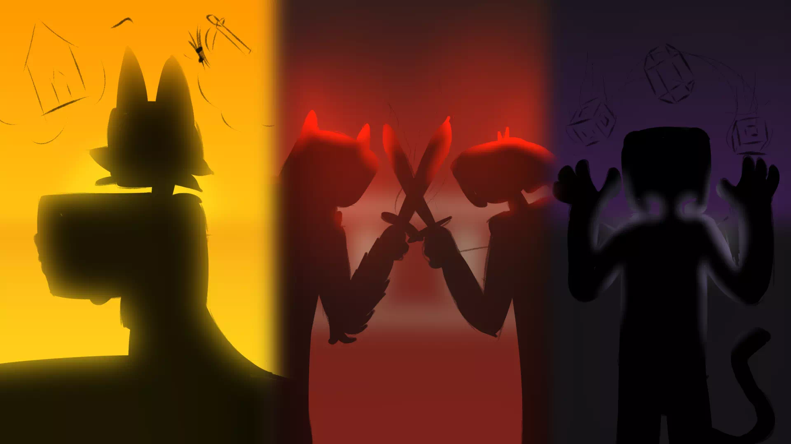
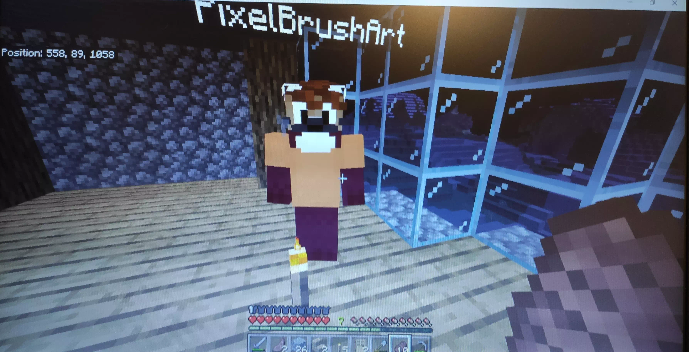

2021
20th of February, 2021
Coalition of the Sun, Atantide Alliance and Lunar Province are established

11th of February, 2021
Move to 1.16.5
7th of February, 2021
First Mobile Player (*Gab_Just_Gab118)
2nd of Janurary, 2021
First non-Hamachi Player joins (Creeper_Jonny)
2020
1st of November, 2020
First proper event, Halloween 2020
26th of October, 2020
First Bedrock Player joins (ginkaandryuga)

8th of September, 2020
Major Server Crash, Creation of Chunk Error Village
")
5th of September, 2020
Server starts for the first time